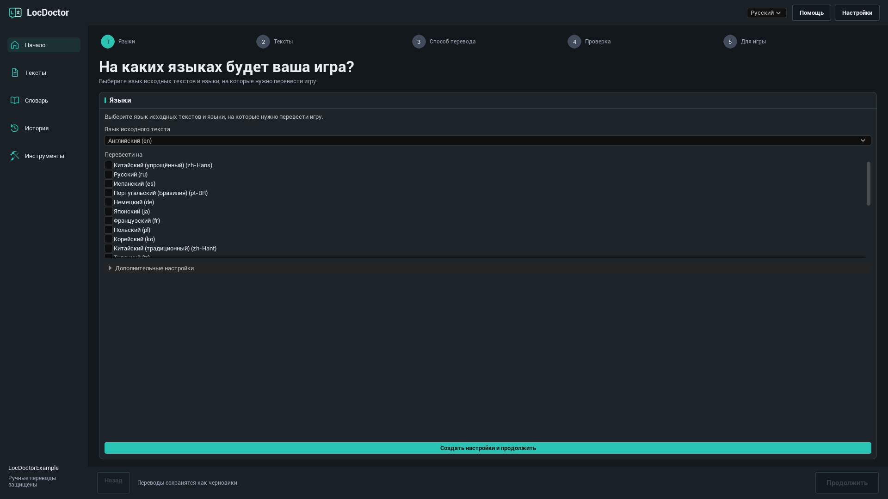
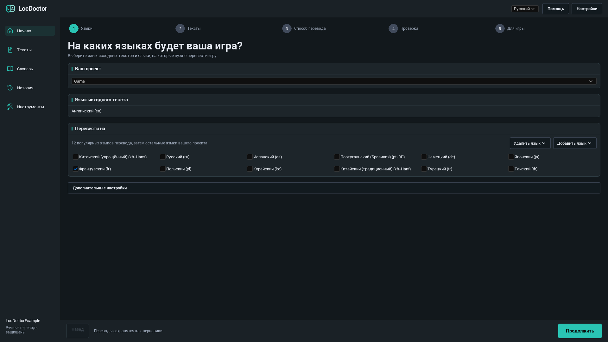
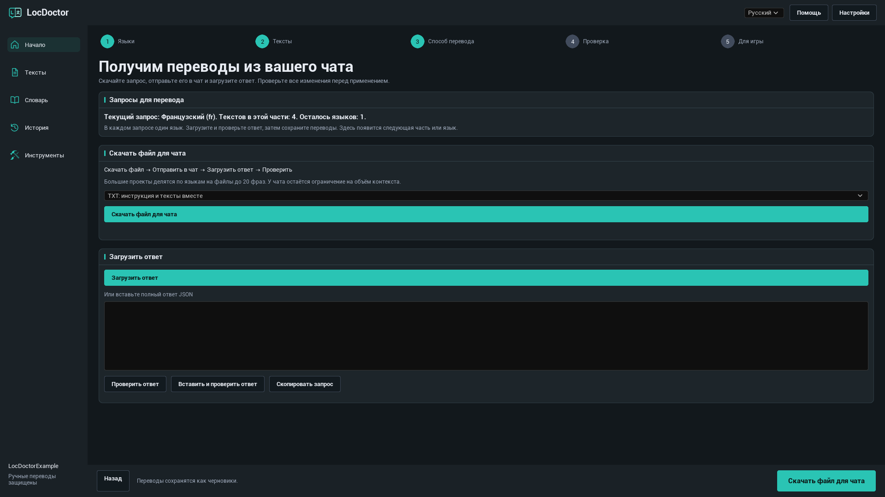
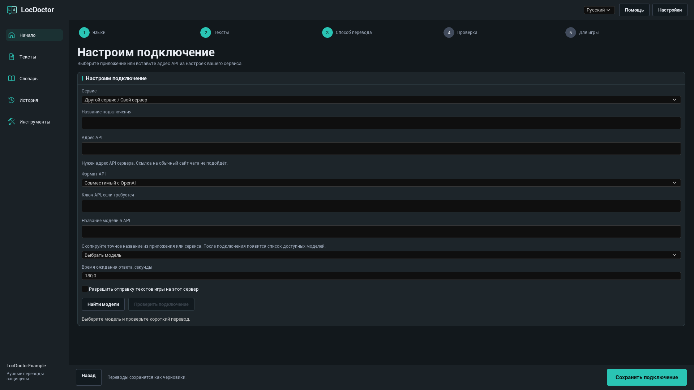
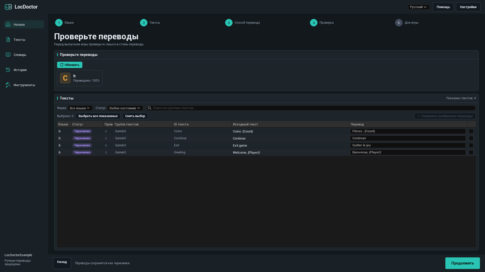
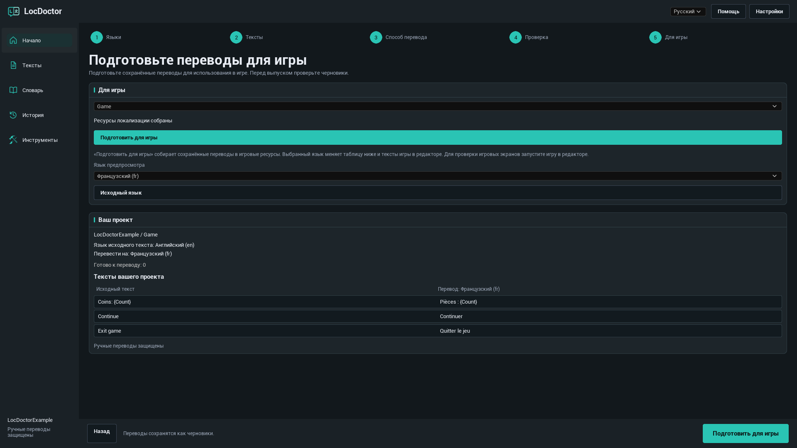

РУКОВОДСТВО ПОЛЬЗОВАТЕЛЯ LOCDOCTOR 1.0.0
Переведите свою игру.
Контролируйте каждое слово.
Переводите тексты игры в Unreal Engine с помощью локальной модели, своего чата с ИИ или сервиса API. Проверьте результат в редакторе и подготовьте переводы для игры.
Выберите доступный вам способ
НАЧАЛО РАБОТЫ
Установка
LocDoctor 1.0.0 поддерживает Unreal Engine 5.7 и 5.8 на 64-разрядной Windows. Используйте пакет для своей версии движка.
Установка через Fab
Установите плагин для своей версии движка из библиотеки Fab в Epic Games Launcher. Откройте проект, при необходимости включите LocDoctor в меню Edit > Plugins и перезапустите редактор.
Установка из ZIP
- Закройте Unreal Editor.
- Распакуйте пакет так, чтобы
LocDoctor.upluginнаходился непосредственно в<YourProject>/Plugins/LocDoctor/. Если ZIP уже содержит папкуLocDoctor, поместите её в папкуPlugins. - Откройте проект. При необходимости включите LocDoctor в меню Edit > Plugins и перезапустите редактор.
- Откройте Tools > LocDoctor.
YourProject/
YourProject.uproject
Plugins/
LocDoctor/
LocDoctor.uplugin
Resources/
Source/Пакет с готовыми бинарными файлами также содержит папку Binaries. Для сборки пакета с исходным кодом Unreal потребуются совместимые инструменты сборки C++.
НАЧАЛО РАБОТЫ
Ваш первый перевод
Начните с одного языка и небольшого набора текстов. Названия кнопок плагина в руководстве соответствуют выбранному языку документации. Названия меню самого Unreal Editor приведены на английском.
- Выберите языки. Откройте Tools > LocDoctor. Укажите язык исходных текстов игры и хотя бы один язык перевода. При первом запуске нажмите Создать настройки и продолжить. Оставьте дополнительные настройки по умолчанию, если вам не нужна другая папка ресурсов или группа текстов.
- Соберите тексты. На этапе Тексты нажмите Собрать тексты. Сохраните изменённые ресурсы игры, если Unreal предложит это сделать. Проверьте, что в сводке проекта появились нужные тексты.
- Выберите способ перевода. Используйте На компьютере, В моём чате или Через API. Для автоматического перевода выберите модель и нажмите Проверить подключение. Плагин выполнит короткий тестовый перевод. После успешной проверки основная кнопка сменится на Перевести тексты.
- Проверьте результат. Переводы ИИ сохраняются как черновики. На этапе Проверка прочитайте каждый перевод, исправьте его при необходимости и сохраните выбранные строки.
- Подготовьте игру. На этапе Для игры нажмите Подготовить для игры. Проверьте игру на каждом языке и включите эти языки в настройки упаковки.

Языки и тексты игры
Исходный язык, языки перевода и язык интерфейса
- Язык исходного текста: язык, на котором написаны исходные тексты вашей игры.
- Перевести на: языки для текущего задания. Снимите отметку с языка, чтобы исключить его из этого задания.
- Язык интерфейса: переключатель в верхней части LocDoctor. Он меняет только язык плагина. По умолчанию выбран английский.
Группа текстов, обычно с именем Game, задаёт настройки локализации набора текстов в Unreal. Если групп несколько, выберите нужную.
Добавление и удаление языка

Сначала предлагаются 12 популярных языков перевода. Нажмите Добавить язык, чтобы найти другой язык по названию или коду культуры Unreal. Кнопка Удалить язык удаляет язык из настроек группы текстов. Файлы переводов сохраняются, поэтому язык можно добавить снова.
Какие тексты можно переводить?
LocDoctor работает с локализуемыми FText и String Tables, собранными системой локализации Unreal. Обычные значения FString и тексты с признаком culture invariant автоматически не локализуются. Найти такие случаи поможет Инструменты > Проверка проекта.
СПОСОБЫ ПЕРЕВОДА
На компьютере
Используйте скачанную текстовую модель в приложении на вашем компьютере. LocDoctor подключается к API-серверу приложения. Сам плагин не устанавливает приложения и не скачивает модели.
- Установите выбранное приложение. Скачайте модель для генерации текста, которой хватит памяти вашего компьютера и которая поддерживает нужные языки.
- Запустите приложение и включите его локальный API-сервер. Оставьте приложение работающим на время перевода.
- В LocDoctor выберите На компьютере, затем Выбрать модель. Кнопка Найти модели обновляет список моделей.
- Выберите модель. Если проверка не началась автоматически, нажмите Проверить подключение и дождитесь короткого тестового перевода.
- Когда подключение готово, нажмите Перевести тексты.
Настройка локального приложения
| Приложение | Что запустить | Стандартный адрес API |
|---|---|---|
| Ollama | Запустите Ollama со скачанной локальной текстовой моделью. Локальный сервер обычно запускается вместе с приложением. | http://127.0.0.1:11434 |
| LM Studio | Откройте Developer и запустите API-сервер. Предоставьте этому серверу доступ к текстовой модели. | http://127.0.0.1:1234/v1 |
| Jan | Откройте Settings > Local API Server и запустите сервер. Если сервер требует ключ, введите тот же ключ в LocDoctor. | http://127.0.0.1:1337/v1LocDoctor также проверяет порт 6767. |
| GPT4All | Откройте Settings > Application > Advanced и включите Local API Server. Загрузите текстовую модель. | http://127.0.0.1:4891/v1 |
Если вы меняли порт, используйте адрес из приложения. LocDoctor запрашивает списки моделей у локальных серверов и проверяет сохранённые локальные подключения. Сканировать диски или выбирать папку установки не нужно.
Официальные инструкции: OllamaLM StudioJanGPT4All
Другое приложение или нестандартный порт
Выберите Другое приложение или Другой сервис / Свой сервер в настройках подключения. Введите Адрес API, выберите Ollama или Совместимый с OpenAI как формат API и укажите точное имя модели. Серверы llama.cpp, LocalAI и vLLM могут работать, если поддерживают выбранный формат API.
СПОСОБЫ ПЕРЕВОДА
В моём чате
Используйте чат с ИИ, который принимает текст или вложения. Вы сами отправляете запрос, а затем возвращаете ответ в LocDoctor. Ключ API для этого способа не нужен.
- Выберите В моём чате. Подпись Текущий запрос или Первый запрос показывает язык и часть текущего запроса.
- Нажмите Скачать файл для чата. Для первой попытки выберите TXT: инструкция и тексты вместе.
- Прикрепите файл в своём чате с ИИ. Попросите следовать инструкциям из файла и вернуть полный ответ с переводами.
- Нажмите Загрузить ответ, чтобы загрузить файл ответа. Также можно вставить полный JSON-ответ в поле и нажать Проверить ответ или воспользоваться Вставить и проверить ответ.
- Прочитайте предпросмотр. Если все проверки пройдены, нажмите Применить переводы. Переводы сохранятся как черновики.
- Скачайте или скопируйте следующий запрос. Повторяйте действия, пока не останется необработанных запросов. Затем проверьте переводы.
Какой формат файла выбрать?

| Формат | Когда использовать | Что прикрепить |
|---|---|---|
| TXT | Для первой попытки. | Один файл с инструкциями и текстами. |
| JSON | Для чата или инструмента, который хорошо работает со структурированными данными. | JSON-запрос вместе с его инструкциями. |
| CSV | Для таблицы, которую нужно просмотреть или передать. | CSV и отдельный файл инструкций. |
Ответ можно загрузить как JSON, как TXT с полным JSON-ответом или как CSV с колонками batch, culture, i и t. Если чат не принимает вложения, используйте Скопировать запрос. Отправка файла не отменяет ограничений чата на контекст и вложения.
Что проверяется в ответе?
LocDoctor проверяет идентификатор запроса, язык, идентификаторы текстов и переменные форматирования. Каждый запрошенный элемент должен присутствовать ровно один раз. Тексты игры и словарь должны по-прежнему соответствовать выгруженному запросу.
Если после выгрузки вы изменили исходный текст, перевод или словарь, создайте новый запрос. Если ответ неполный или переменная изменена, попросите чат исправить ответ. Текущий запрос сохраняется локально в проекте, поэтому работу можно продолжить после перезапуска редактора.
СПОСОБЫ ПЕРЕВОДА
Через API
LocDoctor автоматически отправляет запросы выбранному сервису. Создайте ключ API в личном кабинете этого сервиса. Перед началом проверьте доступность модели и условия оплаты.
- Выберите Через API и сервис, например OpenRouter, OpenAI, Google Gemini или Groq.
- Откройте Дополнительные настройки. Введите Ключ API, если требуется. Для другого сервиса выберите Другой сервис / Свой сервер и укажите адрес и формат API из его документации.
- Нажмите Найти модели и выберите модель. Если сервис не предоставляет список, введите точное Название модели в API.
- Для сервера за пределами этого компьютера включите Разрешить отправку текстов игры на этот сервер.
- Нажмите Проверить подключение и дождитесь короткого тестового перевода. После успешной проверки нажмите Перевести тексты.
Подключение другого сервиса

| Поле | Что указать |
|---|---|
| Название подключения | Понятное вам имя, например «Сервер команды перевода». |
| Адрес API | Базовый адрес API из документации сервиса, например https://openrouter.ai/api/v1. Адрес обычного сайта чата не подойдёт. |
| Формат API | Формат «Совместимый с OpenAI» подходит для соответствующего API Chat Completions, а Ollama для API Ollama. Для других форматов нужна отдельная интеграция. |
| Ключ API | Ключ, выданный сервисом или сервером, если он требуется. |
| Название модели в API | Точный идентификатор, который ожидает сервер. Название модели на сайте может отличаться. |
| Время ожидания ответа, секунды | Значение от 1 до 600. Увеличьте его для медленной модели или сервера. |
Ключи API хранятся в локальных настройках пользователя в папке Saved/Config проекта. Эти настройки не зашифрованы. LocDoctor не включает ключи в файлы запросов для чата, историю переводов и отчёты.
ПРОВЕРКА И ВЫПУСК
Проверка переводов
Переводы ИИ сначала сохраняются как Черновики. Автоматические проверки помогают сохранить форматирование, но смысл, тон и контекст всё равно нужно проверить.
- Откройте этап Проверка или страницу Тексты. При необходимости нажмите Обновить.
- Ограничьте список фильтрами языка и статуса. На этапе проверки показываются выбранные вами языки перевода.
- Сравните исходный текст с переводом. При необходимости отредактируйте перевод. Проверьте имена, термины, переменные, переносы строк и найденные проблемы.
- Выберите строки для сохранения и нажмите Сохранить выбранные переводы.
- Перед выпуском проверьте переведённые экраны в игре.
| Статус | Значение |
|---|---|
| Без перевода | Для этого текста и языка ещё нет сохранённого перевода. |
| Черновики | Перевод ИИ сохранён и ожидает проверки. |
| Проверено | Перевод отмечен как проверенный. |
| Ручной перевод | Ручной перевод защищён от обычной автоматической замены. |
| Устаревшие переводы | После перевода исходный текст изменился. Сверьте перевод с текущим текстом. |
Как читать счётчик прогресса

Прогресс считается по парам «текст и язык». Один исходный текст для четырёх языков означает четыре задания перевода. Обработано показывает число обработанных заданий. Чтобы понять, какие переводы успешно сохранены, проверьте результаты и сообщения об ошибках.
Остановка автоматического перевода сохраняет готовые результаты. Незавершённую работу можно продолжить, если сохранённое задание доступно. Обычные автоматические задания защищают существующие ручные переводы.
Переменные и форматирование
Сохраняйте переменные {Player} и {Count}, теги Rich Text и переносы строк. В запросах для чата форматирование может заменяться защищёнными токенами, например ⟦LD0⟧. Модель должна копировать их точно. При применении корректного ответа LocDoctor восстановит исходное форматирование.
Сложные выражения множественного числа и рода требуют ручной проверки. Переводите текст каждой ветви, сохраняя структуру выражения.
Словарь и история
Используйте единые термины
- Откройте Словарь и нажмите Добавить.
- Введите термин. Выберите Не переводить для имени, которое нужно сохранить, или Обязательный перевод для точного перевода.
- Задайте переводы для нужных языков. При необходимости включите учёт регистра.
- Перед созданием новых запросов нажмите Сохранить.
Например, оставьте имя персонажа без изменений или задайте единый перевод игрового термина для каждого языка. Словарь добавляется в новые запросы. Его изменение может сделать уже выгруженный запрос для чата недействительным.
Возврат к предыдущему изменению
Откройте История, найдите сохранённый пакет по группе текстов, языку и времени и нажмите Восстановить. Перед возвратом LocDoctor проверяет наличие более новых изменений. Если они конфликтуют, сначала проверьте эти изменения.
Если запись была прервана, при следующем открытии может появиться Восстановить прерванные изменения. Нажмите Восстановить, чтобы вернуть сохранённые исходные файлы перед продолжением работы.
ПРОВЕРКА И ВЫПУСК
Подготовить для игры
На этом этапе сохранённые переводы компилируются в ресурсы локализации Unreal. Готовая игра использует эти ресурсы. Интерфейс редактора LocDoctor в выпущенной игре не запускается.
- Завершите проверку переводов, которые войдут в игру.
- Откройте Для игры, выберите группу текстов и нажмите Подготовить для игры. Дождитесь сообщения Ресурсы локализации собраны.
- Выберите Язык предпросмотра. Это обновит пример текста проекта и локализуемые тексты игры в редакторе. Запустите игру в редакторе и проверьте её экраны.
- Нажмите Исходный язык, чтобы завершить предпросмотр.
- Откройте Project Settings > Packaging > Localizations to Package и включите все языки выпускаемой игры. Проверьте, что настройки интернационализации содержат данные этих языков, и протестируйте упакованную сборку.
После сохранения новых переводов выполните компиляцию снова. Если язык работает в редакторе, но отсутствует в упакованной игре, проверьте включение ресурсов локализации и данных культуры в сборку.

Если вместо букв появляются квадраты или символы отсутствуют, используйте Инструменты > Шрифты. Проверьте шрифты игры и резервные шрифты для этого языка.
Инструменты и обмен файлами
Проверка проекта
Откройте Инструменты > Проверка проекта и запустите проверку. Просмотрите найденные места: локализации могут мешать обычные строковые значения, тексты culture invariant, конфликтующие ключи или фразы, собранные из фрагментов. Первый запуск может быть дольше из-за загрузки ресурсов Unreal.
Шрифты
Откройте Инструменты > Шрифты, чтобы проверить наличие символов переводов в выбранных шрифтах игры. Посмотрите отсутствующие символы и незавершённые проверки. Затем проверьте реальные игровые экраны.
Работа с переводчиком
Откройте Инструменты > Импорт и экспорт для обмена переводами через файлы CSV или PO.
- Экспортируйте нужную группу текстов и язык в выбранном формате.
- Переводчик должен менять только переводы, сохраняя идентификаторы текстов, исходные значения и переменные.
- Импортируйте полученный файл и проверьте предложенные изменения.
- Разрешите конфликты с помощью Сохранить переводы проекта или Использовать переводы из файла, затем нажмите Сохранить переводы из файла.
CSV для запросов чата и CSV для обмена с переводчиком предназначены для разных задач. Ответ чата загружайте через В моём чате > Загрузить ответ. Файлы XLSX и XLIFF в этой версии не поддерживаются.
Решение проблем
LocDoctor отсутствует в меню Tools
Откройте Edit > Plugins, найдите и включите LocDoctor. Перезапустите редактор. Если плагина нет в списке, проверьте папку установки и соответствие пакета версии движка. Для пакета с исходным кодом установите совместимые инструменты C++ и соберите редактор.
Тексты не собрались
Сохраните ресурсы игры, проверьте папку сбора в настройках группы текстов и повторите сбор. Тексты должны быть локализуемыми FText или String Tables и входить в конфигурацию сбора Unreal. Проверка Инструменты > Проверка проекта поможет найти обычные строки и нелокализуемые тексты.
Перевод текстов недоступен
Выберите хотя бы один язык и соберите тексты. Для автоматического перевода сначала выберите модель и выполните Проверить подключение. Если новых текстов нет, редактируйте существующие переводы на странице Тексты или соберите новые тексты и выберите другой язык.
Список локальных моделей пуст
Оставьте приложение работающим, включите его локальный API-сервер и скачайте или загрузите текстовую модель. Проверьте адрес и порт API. Для своего сервера введите точное имя модели в дополнительных настройках. Установленное приложение не обязательно означает запущенный API-сервер.
Истекло время проверки подключения
Дайте модели время загрузиться. Закройте приложения, занимающие видеопамять, или выберите меньшую модель. Увеличьте Время ожидания ответа, секунды. Если сервер совсем не отвечает, проверьте адрес, порт и перенаправление запросов localhost системным прокси.
API возвращает 401 или 403
Проверьте, что ключ принадлежит выбранному сервису, действует и даёт доступ к модели. Если локальный сервер требует авторизацию, используйте ключ из настроек API-сервера приложения.
API возвращает 429 или ошибку модели
Подождите перед повторной попыткой или выберите другую доступную модель. Проверьте лимиты аккаунта и доступность модели у сервиса. Получение списка моделей не гарантирует, что сервис сможет выполнить перевод.
Запрос для чата содержит только один из выбранных языков
Это нормально. В запросе один язык и до 20 текстов. Загрузите, проверьте и примените ответ, затем подготовьте следующий запрос. Текущий или следующий язык показан над кнопками работы с файлами.
Ответ чата отклонён
Используйте полный ответ на текущий запрос. Попросите чат вернуть каждый элемент ровно один раз, сохранить значения batch и culture и все переменные. Если тексты проекта или словарь изменились после выгрузки, создайте новый запрос.
Выбор языка предпросмотра не меняет игру
Сохраните переводы и сначала нажмите Подготовить для игры. Убедитесь, что выбранный язык содержит переводы в нужной группе текстов. Предпросмотр влияет на локализуемые тексты игры, а не на меню Unreal Editor. Обычные строки и несобранные тексты не изменятся.
Язык отсутствует в упакованной игре
Скомпилируйте последние сохранённые переводы. Добавьте язык в Project Settings > Packaging > Localizations to Package и включите его данные культуры в настройки интернационализации. Проверьте новую упакованную сборку.
Вместо переведённых символов появляются квадраты
Проверьте основной и резервные шрифты игры для этого языка. Используйте Инструменты > Шрифты для проверки символов и проверьте настоящие виджеты и экраны игры.
Частые вопросы
Нужна ли платная подписка на ИИ?
Подписка не входит в LocDoctor. Используйте локальную модель, свой доступ к чату или API. Доступность, ограничения и оплата зависят от выбранного приложения или сервиса.
Можно ли переводить локально без интернета?
Да, если модель уже скачана и работает на вашем компьютере. Для установки приложения и загрузки модели интернет может понадобиться. Облачная модель обращается к своему провайдеру, даже если само приложение запущено локально.
Переводит ли LocDoctor картинки, голос и субтитры в видео?
Он переводит локализуемые тексты игры, собранные Unreal. Для текста в изображениях, аудио и субтитров нужны собственные исходные тексты и отдельная работа с этим содержимым.
Удаление языка удаляет переводы?
Нет. Кнопка Удалить язык удаляет язык из настроек группы текстов, сохраняя файлы переводов. Снятие отметки только исключает язык из текущего задания.
Какие языки интерфейса доступны?
Английский, русский, немецкий, французский, испанский, бразильский португальский, упрощённый китайский, японский и корейский. Языки перевода вашей игры настраиваются отдельно.
Нужны ли готовой игре LocDoctor или подключение к ИИ?
Плагин используется в Unreal Editor. Готовая игра использует скомпилированные ресурсы локализации Unreal. Для игры не нужны модель перевода или доступ к сервису.
Версия и поддержка
Это руководство относится к LocDoctor 1.0.0 для Unreal Engine 5.7 и 5.8 на 64-разрядной Windows.
1.0.0
Перевод текстов игры через локальные модели, файлы чата и совместимые API. Настройка языков, проверка черновиков, словарь, история, компиляция локализации, проверка проекта и шрифтов, обмен CSV / PO.
Как сообщить о проблеме
Напишите в поддержку: nexusforgeuesupport@gmail.com.
Укажите версии Unreal Engine и LocDoctor, способ перевода и точное сообщение об ошибке. При проблеме подключения добавьте название приложения или сервиса и модели. Снимок в полном размере поможет показать текущий этап.
Перед отправкой снимков и журналов удалите из них ключи API и другие личные данные.